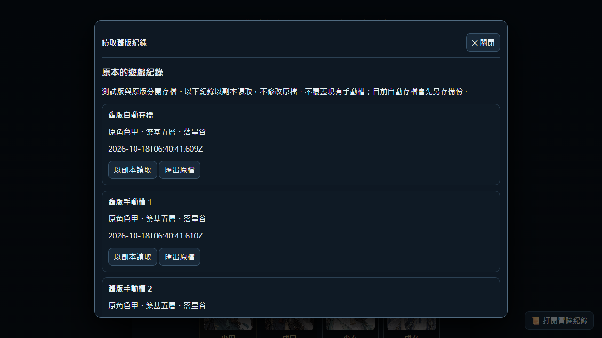
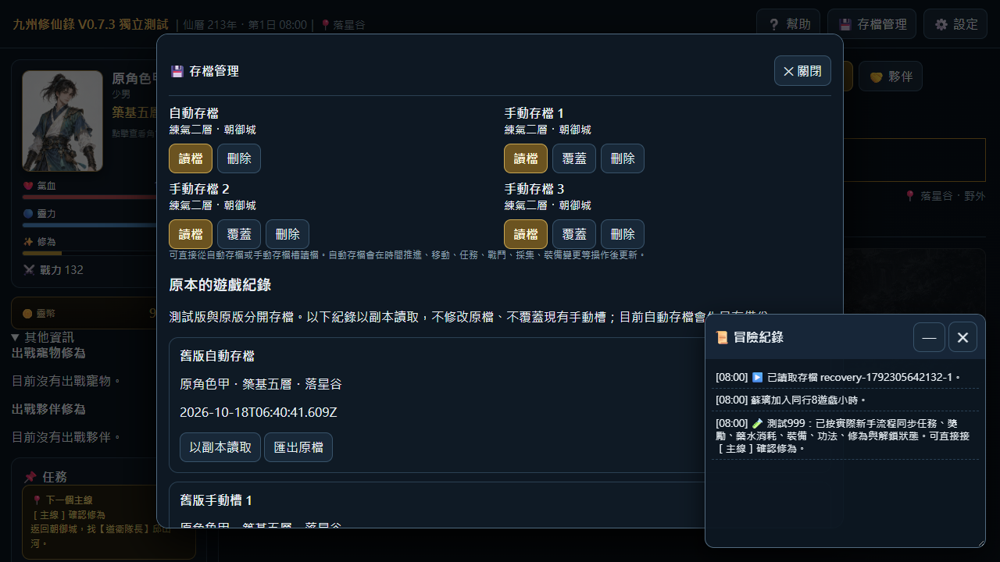

V0.7.3 新三寵補完交付
V0.7.3 獨立測試版・2026-10-18新三寵補完。正式母檔尚待玩家驗收；本輪發布GitHub測試頁。
開啟最新版遊戲
已接入本輪49列八核，保留11列現有八核；神秘蛋25種全部開放，孵化6遊戲小時。靈珠蝶不重乘特殊種倍率。
原本網站首頁仍為0.7.2正式版；本輪成果在preview/v0.7.3獨立測試頁。測試版登入畫面與遊戲內均標示0.7.3，存檔仍與正式版隔離。
L19、L20、L34解除八核待補；L33其餘圖鑑美術仍為部分實裝。
本輪存檔銜接修復
0.7.3先前使用獨立存檔區，一般清單不會列出正式版紀錄。新版在登入畫面及存檔管理新增「讀取舊版紀錄」。同一網站原存檔可直接列出並以副本讀取；原版四槽與現有測試手動槽不改寫，讀取前的測試版自動存檔另存於保留區。
若原存檔在本機HTML、另一網址或另一Chrome設定檔，此網站無法直接讀取。可回原遊戲匯出JSON，再以本頁「從存檔檔案讀取」開啟；不會覆蓋手動槽1。
本輪8項驗證通過。測試使用隔離瀏覽器建立的0.7.2紀錄；尚未直接讀取使用者Chrome個人紀錄，因此不宣稱使用者的個人存檔已恢復。
8項測試證據 · 對應程式

